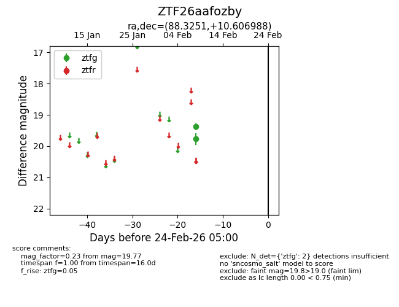
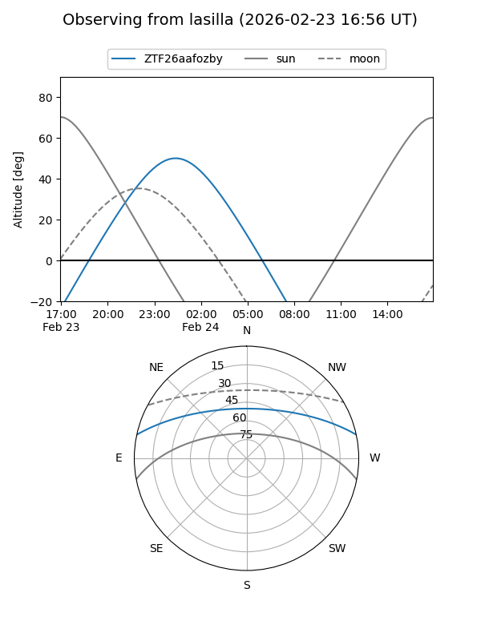
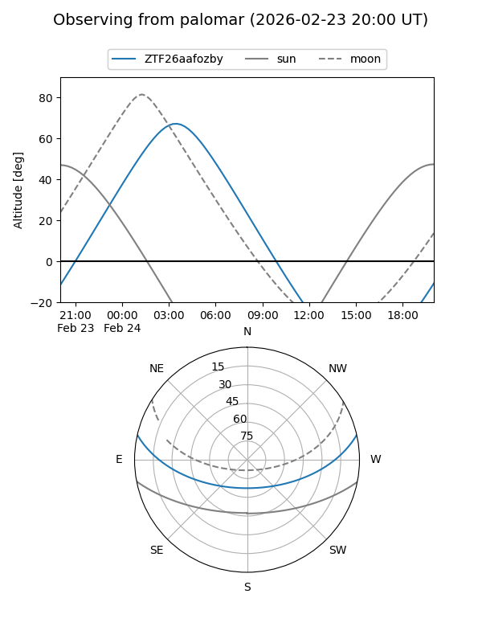

ZTF26aafozby
Target ZTF26aafozby at 2026-02-24 09:08
Aliases and brokers:
FINK: link
Lasair: link
ALeRCE: link
alt names
ZTF26aafozby (ztf,fink_ztf)
Coordinates:
equatorial (ra, dec) = 88.3251,+10.60699
equatorial (HMS+DMS) = 05:53:18.02,+10:36:25.16
galactic (l, b) = (196.7388,-7.79345)
Flags:
Photometry:
last ztfg=19.77
2 ztfg detections
Lightcurve

Visibility


Additional plots